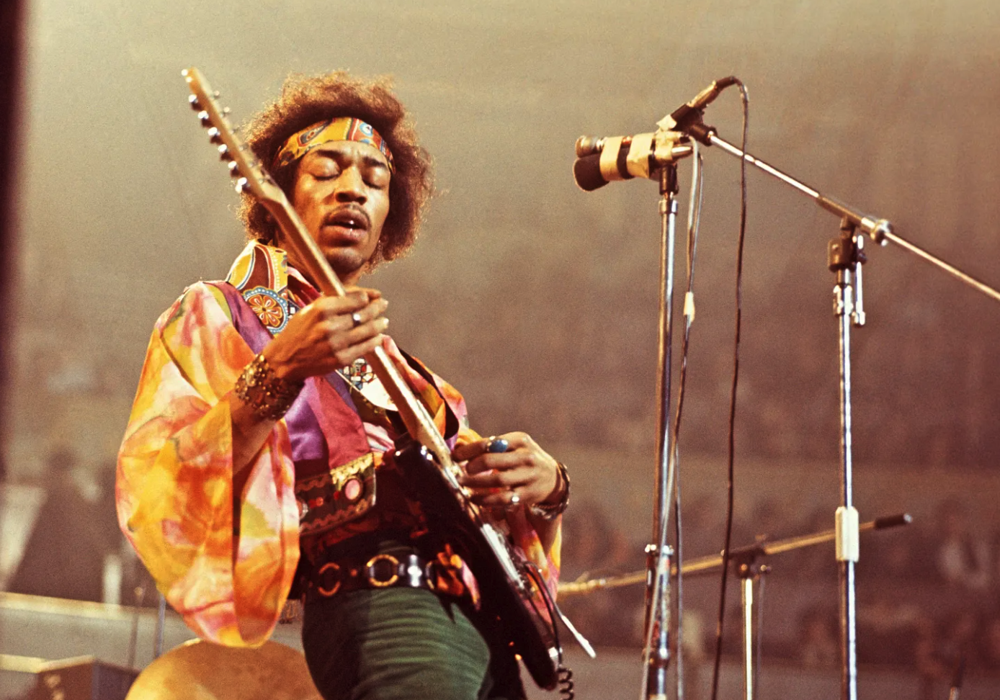

Biography
The Jimi Hendrix Website
Home
Jimi Hendrix grew up in Seattle, Washington. From an early age he expressed interest in guitar.In fact he carries a stick around with him which he would pretend to play as a guitatr. A teacher at his school tried to get resources to but Jimi a guitar worrying that the denial of such an outlet would result in psychiological damage to Hendrix. Though the guitar was never granted Jim was able to find an old ukele. And started playing.

Jimi Hendrix had a prolific career.In September 1962, after Cox was discharged from the Army, he and Hendrix moved about 20 miles (32 km) across the state line from Fort Campbell to Clarksville, Tennessee, and formed a band, the King Kasuals.[65] In Seattle, Hendrix saw Butch Snipes play with his teeth and now the Kasuals' second guitarist, Alphonso "Baby Boo" Young, was performing this guitar gimmick.[66] Not to be upstaged, Hendrix also learned to play in this way. He later explained: "The idea of doing that came to me ... in Tennessee. Down there you have to play with your teeth or else you get shot. There's a trail of broken teeth all over the stage."[67]
Tragically, Hedrix died in 1970 at the age of 27. Details concerning Hendrix's last day and death are disputed.[304] He spent much of September 17, 1970, in London with Monika Dannemann, the only witness to his final hours.[305] Dannemann said that she prepared a meal for them at her apartment in the Samarkand Hotel around 11 p.m.,